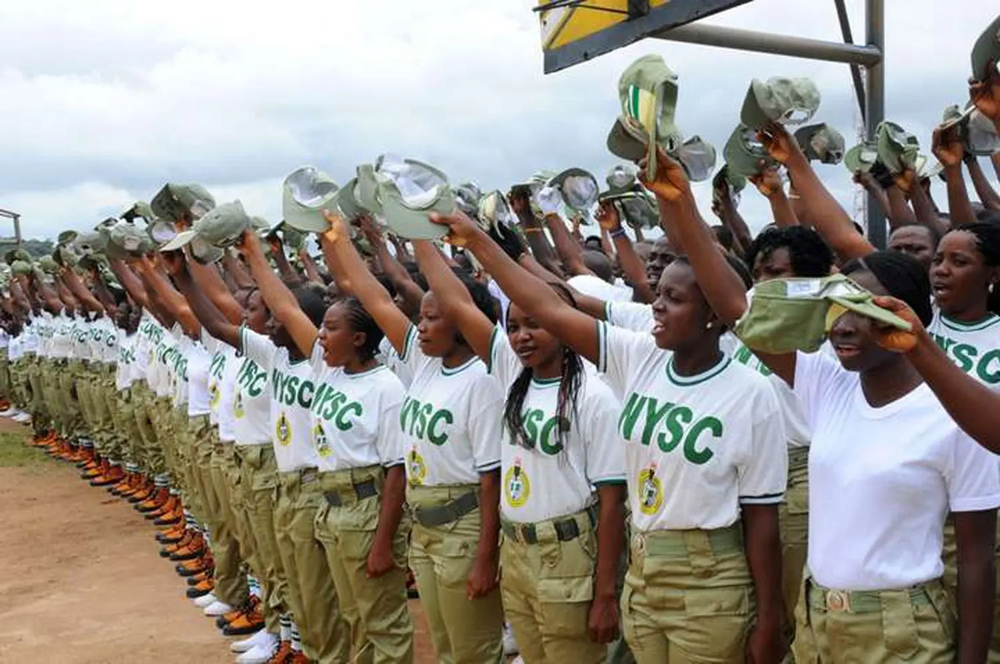

Requirements and eligibility for NYSC
Prospective corps members should have a valid and functional email address and Nigerian (GSM) telephone number to register.....
Prospective corps members should have a valid and functional email address and Nigerian (GSM) telephone number to register.....
The National Youth Service Corps (NYSC) is a program set up by the Nigerian government during the military regime to involve Nigerian graduates in nation building.....

The state was created out of the former Gongola State on 27 August 1991, by the military government of General Ibrahim Babangida. Taraba State is bounded in...
Taraba (Fula: Leydi Taraba 𞤤𞤫𞤴𞤣𞤠𞤼𞤢𞤪𞤢𞤦𞤢) is a state in North Eastern Nigeria, named after the Taraba River which traverses the southern part of the state. Taraba's capital is Jalingo...

All you need to know about the NYSC Taraba State Corpers support website. NYSC Taraba Corpers support (NyscTarabaCS) is a support website and the group project....